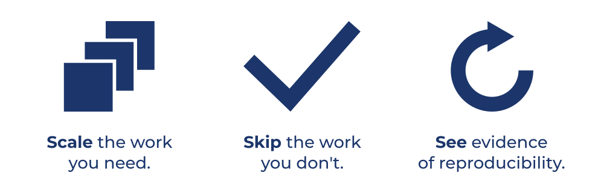
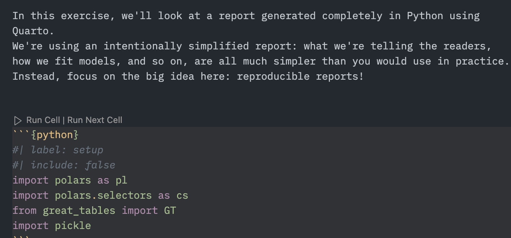
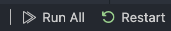

Code pipelines in Python
Managing code with Make
2025-03-22
Strategies for reproduciblity
Art by Allison Horst
Clean execution environments
Quarto documents
Clean execution environments
Fresh Jupyter Kernels
Strategies for reproduciblity
- Quarto for reproducible documents
- Virtual environments for package version management, such as
condaoruv - git/GitHub for version control
Script-oriented workflows
01-read-data.py
02-clean-data.py
03-decriptive-stats.py
...
n-output.py
report.qmd- Doesn’t scale well—in terms of both time and scope
- Not clear what we can skip
GNU Make

Setting up a pipeline
- Make requires a
Makefilefile in the root directory of your project
├── data
│ └── gapminder.csv
├── scripts
│ └── create_line_plot.py
└── Makefilescripts/create_line_plot.py
def create_line_plot(df: pl.DataFrame) -> plt.Figure:
## -- snip --
return fig
def main():
gapminder = pl.read_csv("data/gapminder.csv")
fig = create_line_plot(gapminder)
# Ensure the output directory exists.
os.makedirs("figures", exist_ok=True)
# Save the figure as a PNG image.
fig.savefig("figures/gapminder_plot.png", dpi=300, bbox_inches="tight")
plt.close(fig)
if __name__ == "__main__":
main()Visualizing Makefile
flowchart TD
n4("data/gapminder.csv")
n2{{"figures/gapminder_plot.png"}}:::dirty
n3("scripts/create_line_plot.py")
n4 --> n2
n3 --> n2
What’s Make’s plan?
Run this in the terminal! Don’t put it in Makefile or other scripts.
What’s Make’s plan?
Building the pipeline
uv run scripts/create_line_plot.py├── Makefile
├── data
│ └── gapminder.csv
├── figures
│ └── gapminder_plot.png
└── scripts
└── create_line_plot.pyGNU Make
Your Turn 1
Work through Your Turn 1 in exercises.qmd
Makefile
The indent must be a tab!
Makefile
Makefile
Makefile
Makefile
Makefile
Makefile
flowchart TD
n2{{"all"}}:::dirty
n5("dependency1")
n6("dependency2")
n8("dependency3")
n4{{"target1"}}:::dirty
n3{{"target2"}}:::dirty
n7{{"target3"}}:::dirty
n3 --> n2
n7 --> n2
n5 --> n4
n6 --> n4
n4 --> n3
n8 --> n7
Makefile: make clean
Your Turn 2
Work through Your Turn 2 in exercises.qmd
Your Turn 2
flowchart TD
n2{{"all"}}:::dirty
n5("data/diabetes-buckingham.csv")
n3{{"parquet/diabetes.parquet"}}:::dirty
n4("scripts/read_diabetes.py")
n3 --> n2
n5 --> n3
n4 --> n3
Re-running targets
Outdated targets
Outdated targets
uv run scripts/create_line_plot.pyYour Turn 3
Change the parquet/diabetes.parquet target to depend on diabetes.csv instead. Also modify scripts/read_diabetes.py to use this file.
Predict which targets are going to re-run, then run make -n. Were you right?
Run make
Your Turn 3
flowchart TD
n2{{"all"}}:::dirty
n5("data/diabetes.csv")
n3{{"parquet/diabetes.parquet"}}:::dirty
n4("scripts/read_diabetes.py")
n3 --> n2
n5 --> n3
n4 --> n3
Building up your pipeline
- Good targets are meaningful units of your analysis or important dependencies like files
- Add one or two targets at a time
- Run
make -nandmakeoften
Your Turn 4 and Your Turn 5
Work through Your Turn 4 and Your Turn 5 in exercises.qmd
TODO: add mermaid for 4 and 5
Including Quarto files as targets: report.qmd
```{python}
#| label: setup
#| include: false
import polars as pl
gapminder = pl.read_csv("data/gapminder.csv")
```
These data have `{python} len(gapminder)` observations.
```{python}
#| label: fig-one
#| fig-cap: "Figure 1"
import IPython.display as disp
disp.Image("figures/gapminder_plot.png")
```make
uv run quarto render report.qmdIncluding Quarto files as targets
flowchart TD
n6("data/gapminder.csv")
n4{{"figures/gapminder_plot.png"}}:::dirty
n2{{"report.html"}}:::dirty
n3("report.qmd")
n5("scripts/create_line_plot.py")
n6 --> n4
n5 --> n4
n6 --> n2
n4 --> n2
n3 --> n2
Your Turn 6
Work through Your Turn 6 in exercises.qmd
TODO: mermaid
Removing target files
- make clean: A custom but common command to remove all created targets. Resets the pipeline to scratch.
Your Turn 7
Confirm that you can reproduce your entire pipeline from scratch. In the terminal:
Run make clean
Run make -n
Run make
Automatic parallelization
Automatic parallelization
Automatic parallelization
Wildcards
.PHONY: all clean
# Find all CSV files in the data/ directory.
CSV_FILES := $(wildcard data/*.csv)
# Generate a list of Parquet file names in the parquet/ directory.
PARQUET_FILES := $(patsubst data/%.csv,parquet/%.parquet,$(CSV_FILES))
# Default target: build all Parquet files.
all: $(PARQUET_FILES)
# Pattern rule: convert each CSV file to a Parquet file.
parquet/%.parquet: data/%.csv
uv run scripts/convert_csv_to_parquet.py $< $@
clean:
rm -f parquet/*.parquet